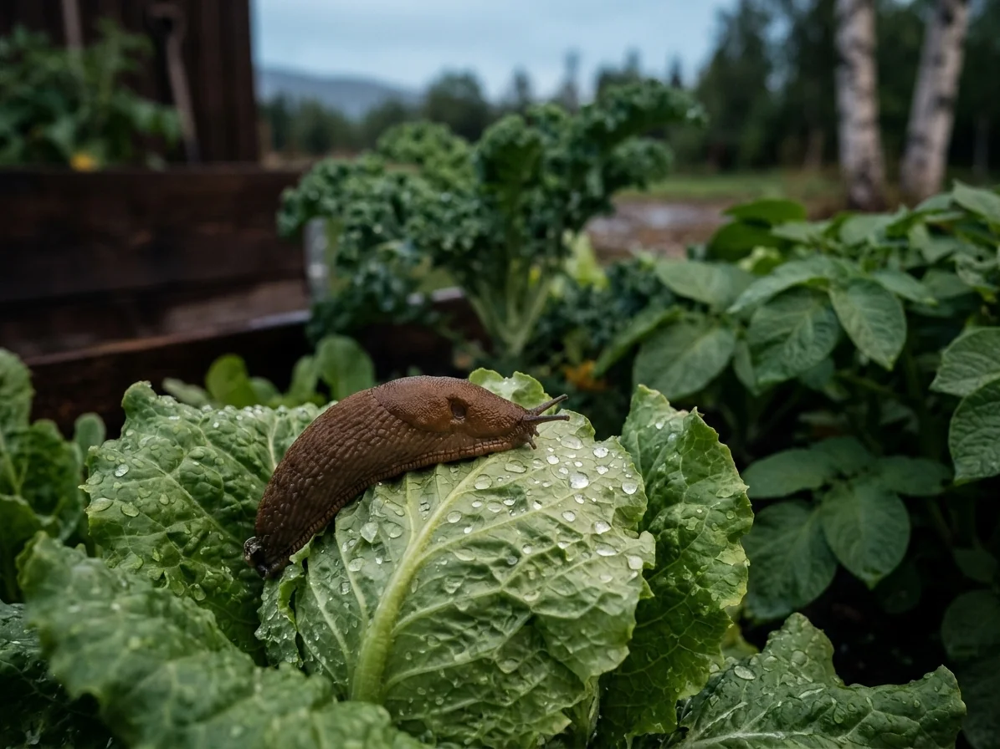

Fagartikler Vilt i hagenGrevling på tomta: hva kan du gjøre – og hva har du lov til?Grevlingen er fredelig og angriper ikke mennesker, men den kan grave opp plenen og lage hi under terrassen. Her er hva som virker, når du ka…
Vilt i hagenGrevling på tomta: hva kan du gjøre – og hva har du lov til?Grevlingen er fredelig og angriper ikke mennesker, men den kan grave opp plenen og lage hi under terrassen. Her er hva som virker, når du ka… GnagereRotter i byen: hva er ditt ansvar, og hva gjør kommunen?Ser du en rotte i hagen eller bakgården, er det huseier eller beboer som må ta tak i det. Her er hvordan du kjenner igjen sporene, fjerner d…
GnagereRotter i byen: hva er ditt ansvar, og hva gjør kommunen?Ser du en rotte i hagen eller bakgården, er det huseier eller beboer som må ta tak i det. Her er hvordan du kjenner igjen sporene, fjerner d… FlåttFlått langs kysten: sjekk deg selv etter turenSkogflåtten trives i kystnære strøk med løvskog, kratt og høyt gress – også i hager. Langs Sørlandskysten og rundt Oslofjorden finnes skogfl…
FlåttFlått langs kysten: sjekk deg selv etter turenSkogflåtten trives i kystnære strøk med løvskog, kratt og høyt gress – også i hager. Langs Sørlandskysten og rundt Oslofjorden finnes skogfl… MaurStokkmaur eller skogsmaur? Slik ser du forskjellenStore maur inne i huset eller hytta kan bety stokkmaur, som gnager ut reir i treverk. Men ofte er det ufarlig skogsmaur – eller små sukkerma…
MaurStokkmaur eller skogsmaur? Slik ser du forskjellenStore maur inne i huset eller hytta kan bety stokkmaur, som gnager ut reir i treverk. Men ofte er det ufarlig skogsmaur – eller små sukkerma… TreskadedyrHusbukk langs kysten av Telemark og Agder: tegn du ser etterHusbukken er en stor bille som spiser tørt bartrevirke i bygninger. Den finnes særlig langs kysten av Telemark og Agder, og angrepene utvikl…
TreskadedyrHusbukk langs kysten av Telemark og Agder: tegn du ser etterHusbukken er en stor bille som spiser tørt bartrevirke i bygninger. Den finnes særlig langs kysten av Telemark og Agder, og angrepene utvikl… VepsVepsesesongen: derfor er bolet lite i mai og stort i augustHvert vepsebol lever bare ett år. Når du vet hvordan sesongen går, skjønner du hvorfor det lønner seg å oppdage bolet tidlig – og når det ka…
VepsVepsesesongen: derfor er bolet lite i mai og stort i augustHvert vepsebol lever bare ett år. Når du vet hvordan sesongen går, skjønner du hvorfor det lønner seg å oppdage bolet tidlig – og når det ka… FuktSølvkre og skjeggkre: hva fukten betyr – og hvorfor skjeggkre er vanskeligereSølvkre er en harmløs badegjest. Skjeggkre har spredt seg kraftig de siste årene og kan bli mange. Her er hva fukt har å si for hver av dem,…
FuktSølvkre og skjeggkre: hva fukten betyr – og hvorfor skjeggkre er vanskeligereSølvkre er en harmløs badegjest. Skjeggkre har spredt seg kraftig de siste årene og kan bli mange. Her er hva fukt har å si for hver av dem,… TreskadedyrSmå runde hull i treverket? Det kan være stripet borebilleStripet borebille – også kalt mit, mott eller mår – er vanligst i fuktige kyststrøk og finnes nord til og med Troms. Hullene er ofte spor et…
TreskadedyrSmå runde hull i treverket? Det kan være stripet borebilleStripet borebille – også kalt mit, mott eller mår – er vanligst i fuktige kyststrøk og finnes nord til og med Troms. Hullene er ofte spor et… GnagereMus på gården: låve, stabbur og fôrlagerDer det er fôr og korn, er det mus. På gården er det ofte skogmus og klatremus som kommer inn – og de har kort vei mellom bolet og maten.…
GnagereMus på gården: låve, stabbur og fôrlagerDer det er fôr og korn, er det mus. På gården er det ofte skogmus og klatremus som kommer inn – og de har kort vei mellom bolet og maten.… GnagereSmågnagerår: når det kryr av mus og lemenMus og lemen svinger kraftig i antall, med topper omtrent hvert tredje–fjerde år. I toppårene øker også presset mot hytter og hus – og risik…
HytteHytta ved sjøen: steng den riktig for vinteren – og åpne den uten overraskelserSommerhuset ved vannet står ofte tomt fra høsten til våren. Da er det et perfekt vinterkvarter for mus. Slik stenger du hytta om høsten og å…
GnagereSmågnagerår: når det kryr av mus og lemenMus og lemen svinger kraftig i antall, med topper omtrent hvert tredje–fjerde år. I toppårene øker også presset mot hytter og hus – og risik…
HytteHytta ved sjøen: steng den riktig for vinteren – og åpne den uten overraskelserSommerhuset ved vannet står ofte tomt fra høsten til våren. Da er det et perfekt vinterkvarter for mus. Slik stenger du hytta om høsten og å… HytteFjellhytta: mus gjennom vinteren, besøk i skisesongen og åpning for barmarkFjellhytta brukes ofte mest om vinteren. Mellom besøkene står den tom og kald – og i et smågnagerår er det mange mus som leter etter ly.…
HytteFjellhytta: mus gjennom vinteren, besøk i skisesongen og åpning for barmarkFjellhytta brukes ofte mest om vinteren. Mellom besøkene står den tom og kald – og i et smågnagerår er det mange mus som leter etter ly.… Vilt i husetFlaggermus på loftet: fredet, nyttig – og slik gjør du det riktigAlle flaggermus i Norge er fredet. Har de slått seg ned på loftet eller i veggen, må du vente til de har forlatt huset før du tetter – og FH…
Vilt i husetFlaggermus på loftet: fredet, nyttig – og slik gjør du det riktigAlle flaggermus i Norge er fredet. Har de slått seg ned på loftet eller i veggen, må du vente til de har forlatt huset før du tetter – og FH… Vilt i hagenHoggorm i hagen og på hytta: kjennetegn og hva du gjør ved bittHoggormen er Norges eneste giftige slange. Den er fredet, sjelden aggressiv – og et bitt skal alltid tas på alvor.…
Vilt i hagenHoggorm i hagen og på hytta: kjennetegn og hva du gjør ved bittHoggormen er Norges eneste giftige slange. Den er fredet, sjelden aggressiv – og et bitt skal alltid tas på alvor.… InsekterPlutselig fullt av fluer om høsten? Loftsfluer, gressfluer og fruktfluerNår det blir kaldt, søker flere fluearter inn i hus for å overvintre. De fleste gjør ingen skade – men det hjelper å vite hvilken flue du ha…
InsekterPlutselig fullt av fluer om høsten? Loftsfluer, gressfluer og fruktfluerNår det blir kaldt, søker flere fluearter inn i hus for å overvintre. De fleste gjør ingen skade – men det hjelper å vite hvilken flue du ha… TekstilerHull i ullgenseren? Klesmøll og brun pelsbilleKlesmøll er insektet som gjør størst skade på tekstiler i Norge. Brun pelsbille har spredt seg fra Oslo til tettsteder i resten av landet. B…
HageBrunsnegl i hagen: når og hvordan du tar demBrunskogsneglen – også kalt brunsnegl eller mordersnegl – er en fremmed art med svært høy risiko. Timing er alt: hver snegl du tar før eggle…
TekstilerHull i ullgenseren? Klesmøll og brun pelsbilleKlesmøll er insektet som gjør størst skade på tekstiler i Norge. Brun pelsbille har spredt seg fra Oslo til tettsteder i resten av landet. B…
HageBrunsnegl i hagen: når og hvordan du tar demBrunskogsneglen – også kalt brunsnegl eller mordersnegl – er en fremmed art med svært høy risiko. Timing er alt: hver snegl du tar før eggle… FuglerMåker på taket: gjør tiltak før hekkingen starterMåker er beskyttet av loven. Når de først har bygget reir, må du la dem være i fred – derfor er det før hekkingen du kan gjøre noe.…
FuglerMåker på taket: gjør tiltak før hekkingen starterMåker er beskyttet av loven. Når de først har bygget reir, må du la dem være i fred – derfor er det før hekkingen du kan gjøre noe.… InsekterHumler eller bier i veggen: hva gjør du?Humler og bier er nyttige pollinatorer og sjelden et problem. Men de kan bygge bol i husvegger. Først må du vite om det er humler, bier elle…
InsekterHumler eller bier i veggen: hva gjør du?Humler og bier er nyttige pollinatorer og sjelden et problem. Men de kan bygge bol i husvegger. Først må du vite om det er humler, bier elle… GnagereLyder i veggen, taket eller på loftet? Slik finner du ut om det er mus – og hvor de kommer innKrafsing i veggen om kvelden er som regel mus som har funnet veien inn om høsten. Først finner du ut hvilket dyr det er og hvor det holder t…
GnagereMusebæsj, rottelort eller flaggermus? Slik skiller du demSmå, mørke korn i skapet eller på loftet forteller mye: hvilket dyr det er, hvor mange og hvor lenge de har vært der. Størrelsen og formen a…
GnagereRengjøring etter mus: slik gjør du det uten å virvle opp smitteMuseekskrementer og urin kan overføre sykdom, også musepest. Det viktigste rådet er enkelt: våt klut, ikke kost eller støvsuger.…
GnagereMus i huset om høsten: finn hullet før musa gjør detNår nettene blir kalde, flytter mange mus inn der det er varmt og tørt. Det viktigste verktøyet er en lommelykt, ikke gift: finn hullene, te…
GnagereLyder i veggen, taket eller på loftet? Slik finner du ut om det er mus – og hvor de kommer innKrafsing i veggen om kvelden er som regel mus som har funnet veien inn om høsten. Først finner du ut hvilket dyr det er og hvor det holder t…
GnagereMusebæsj, rottelort eller flaggermus? Slik skiller du demSmå, mørke korn i skapet eller på loftet forteller mye: hvilket dyr det er, hvor mange og hvor lenge de har vært der. Størrelsen og formen a…
GnagereRengjøring etter mus: slik gjør du det uten å virvle opp smitteMuseekskrementer og urin kan overføre sykdom, også musepest. Det viktigste rådet er enkelt: våt klut, ikke kost eller støvsuger.…
GnagereMus i huset om høsten: finn hullet før musa gjør detNår nettene blir kalde, flytter mange mus inn der det er varmt og tørt. Det viktigste verktøyet er en lommelykt, ikke gift: finn hullene, te… InsekterVeggedyr på hotellet: sjekk rommet på to minutterVeggedyr kommer sjelden inn av seg selv. De blir båret inn, oftest i bagasjen etter en reise. Hotellrommet er stedet der du lettest kan oppd…
InsekterVeggedyr på hotellet: sjekk rommet på to minutterVeggedyr kommer sjelden inn av seg selv. De blir båret inn, oftest i bagasjen etter en reise. Hotellrommet er stedet der du lettest kan oppd…
Alle artikler
24 artikler om skadedyr i hus, hytte og hage – skrevet med Folkehelseinstituttet og andre offentlige kilder i ryggen.
